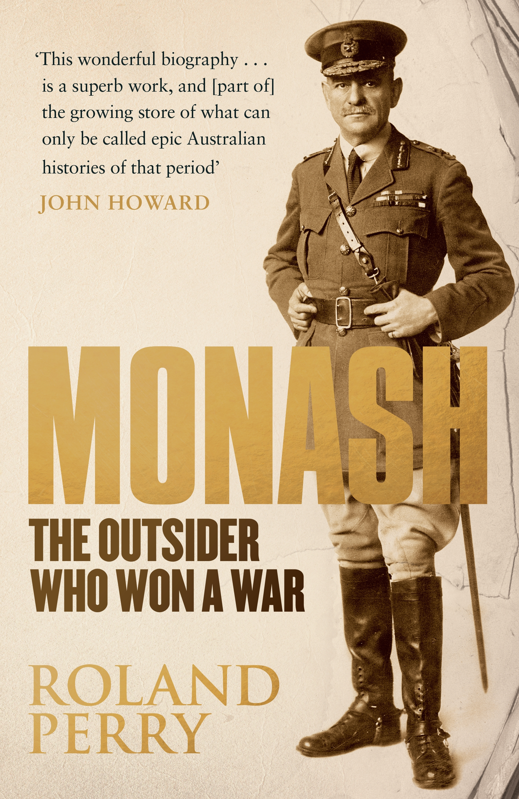

Sir John Monash, a soldier, engineer and administrator, begun his life on the 27th of June in 1865, when the Victorian Colony was just barely 30 years old and the population was close to 40,000. John Monash was born in West Melbourne on Dudley Street as the eldest of three children and the only son of his Jewish parents, (Louis Monash, 1831-1964 and Bertha, nee Manasse) who had already been living in Australia two years prior to his birth. John Monash was brought up bilingually, German being his mother tongue. With his fluency in the language, Monash was able to use it to his advantage (Geoffrey Serle, 1986).
Life for the Monash family who was originally or Prussian Jewish stock, was not without pressures. The family, similar to most other immigrants at the time, were having many problems, particularly financial. In the hopes of bettering the unfortunate circumstances, the family moved to Jerilderie where John Monash's father, Louis, opened a general store. It is myth, that John Monash left the place in February with his mother and sisters, and travelled back to Melbourne to receive education. Whilst in Melbourne, with intention to reach his full potential, it is said that Ned Kelly and his 'crew' went on a rampage in Jerilderie.
The Monash family were one of the first Jewish families to arrive in Australia seeking refuge from terror, discrimination and poverty in Europe. At the time, Jews had no work prohibitions in Melbourne, they entered the Parliament in significant numbers and had educational opportunities as well as social freedom. In comparison to other European countries where those of Jewish heritages had to suffer in poverty and constant fear, Australia was a better place to be for the Jewry. Monash's story is an example of the fortune and treatment of the Jewry in Australia.
During the time in which Monash's family migrated to Australia, the first Jewish services in the colony were conducted only a few decades before their arrival (1920) and allocation of land for a consecrated Jewish cemetery was not approved until 1832 (V.D Lipman, 1954 p.121).
According to Perry's Monash, The Outsider Who Won a War, the reasons behind his outcast were broken down as the four handicaps of birth; being a non-regular army person before the war (1914-1918), being a 'colonial' from Australia, having a German family background (despite fighting against the Germans and winning during the war) and being Jewish.
Despite these factors that made him an 'outsider' to some, John Monash's strong character drove him to overcome these drawbacks to progress within the military during the war. The greatest problem and the criticism received all pointed towards his German heritage. John Monash continued to fight and lead, despite the enemy being of the same heritage. He rose in his ranks and developed tactics to win the war. According to the Scotch College community, John Monash's heart was attached to one country: Australia.
He was born and raised in Australia, but his parents were born in the country against which he was prosecuting war. The soldier could not have been more of an outsider than that (Scotch College Community, December 2011). The Scotch College community are often reminded of their honourable dux, John Monash as he made a huge impact. Later on, the school continued to honour their former student.
The Germans feared the Australian Army. Monash, who was brought up bilingual with German as his mother tongue, often interrogated German officers himself. This lead to many opinionated debates within the community, including peers that Monash had worked with himself. Views varied, with groups wary of the trust they had been giving to John Monash, whilst others supported him.
These findings suggest that Monash himself did not give much attention to his own genetic heritage, and instead focused on the country which he was brought up in. He prioritized his work and allowed his identity to follow shortly behind. The way in which he viewed his own identity has influenced the identities of citizens all over the globe.
It was not only until after the war and his great victory, that John Monash became an even bigger inspiration towards the citizens of Australia. His victory proved him the ability to think logically as well as handle situations in which were stressful at the time. Monash was able to shape the identity of Australians through his own experiences in war.
Upon surviving and bringing the country victory, Monash received a lot of respect from others, but contradictory to this, the more love and support he was awarded, the more hatred and suspicions he received. Though he brought such victory towards his country, it was later revealed that his heritage was of those he fought against in war. It was seen that many views were later thrown towards this fact.
Whilst one group of individuals believed that Sir John Monash was doing the country a good deed, the others viewed Monash as someone who didn't belong or simply, felt neutral. Though the vast majority supported the decisions of Monash after the war, the later revealed German heritage left many indecisive and unsettled.
John Monash was an Australian that was never going to be forgotten. From the year of his passing until the modern times of the twenty first century, lectures, memorials, portraits, statues, streets, avenues, scout troops, schools, universities, institutions, libraries, books, films, horse races, a horse, a cavern and a valley commemorated his exceptional life. His life stories and achievements have inspired and impacted many citizens around the world to this day, contributing to one of the biggest turning points in Australia.
References